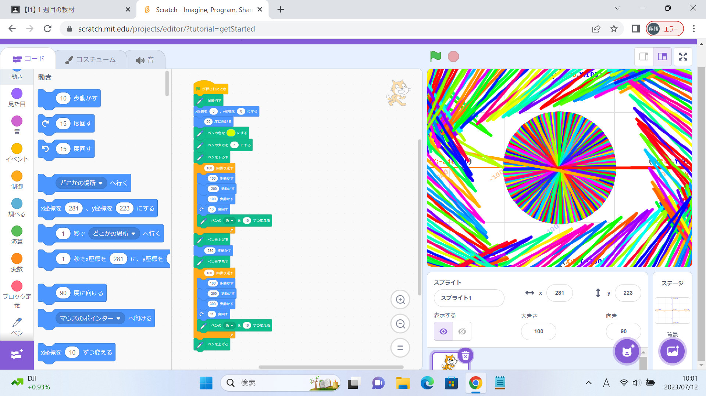
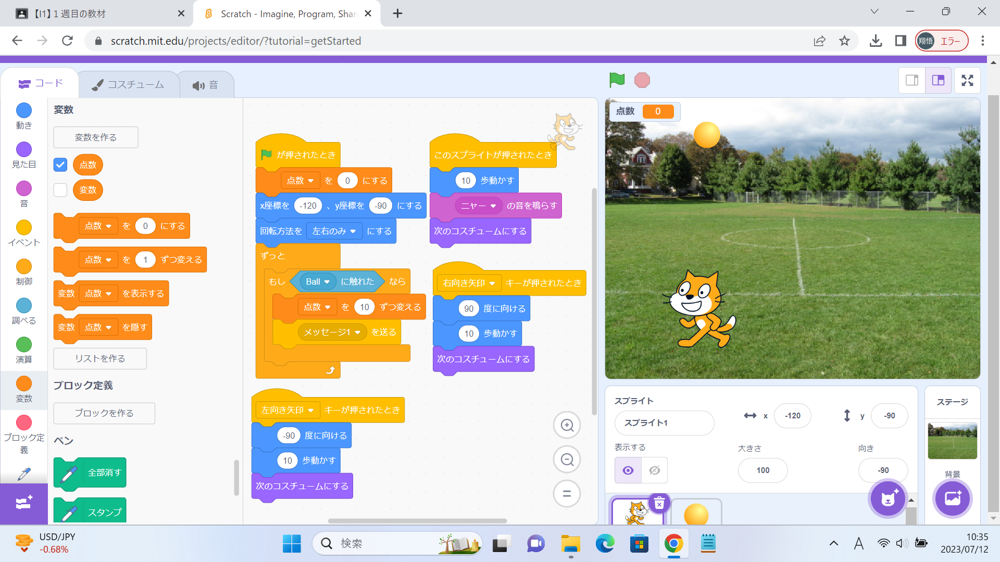

1週目のレポート ： 公大高専１年実習I-1
1a班18番 ドラえもん
第1週目
1-1 サイエンスアート

1.内容
スクラッチを使って線を書くプログラムを作る。
時間によって、線が描かれる場所が変わるようになっている。
2.感想
プログラミングは難しかったけど、できた時の達成感がすごかった。
家でもスクラッチをいじって慣れようと思った。
1-2 ゲーム

1.内容
落ちてくるボールを、猫を動かしてキャッチするというもの。
左矢印を押すと左に、右矢印を押すと右に動くようにプログラムする。
2.感想
単純なプログラミングだけでなく、ゲームとして成り立つかや、猫の移動速度を変えて動かしやすいように工夫をした。
他にもキャッチしてはいけないボールや、ジャンプなどを動作に組み込めれば面白そうだと思った。
1-3 ホームページ作成
私のホームページ
1.内容
スクラッチを使ってプログラミングする。
ペンを使って色を書けるようにして、円を書けるように、キャラクターを動かすプログラムを作成した。
2.感想
難しかったけど、自分の思う通りに動かせたときはうれしかった。
早くプログラミングに慣れて、素早くできるようになりたいと思った。